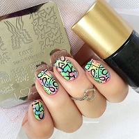
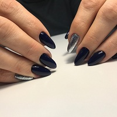

Ворона Ирина
Приветствую Вас на моем сайте! Меня зовут Ирина и я являюсь дипломированным мастером по уходу за состоянием ногтей.


Частный мастер маникюра и наращивания ногтей!
Рада предложить Вам комплекс услуг, включая маникюр/педикюр, наращивание ногтей акрилом и гелем, коррекцию, а также различные виды массажа кистей рук и ног. Если вы ищете профессионального мастера в Чернигове, вы его нашли!